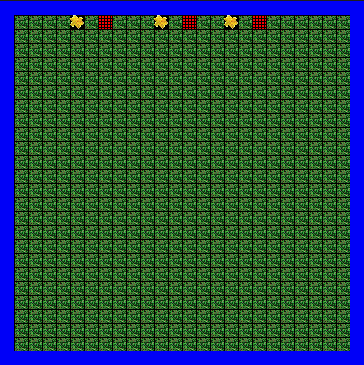
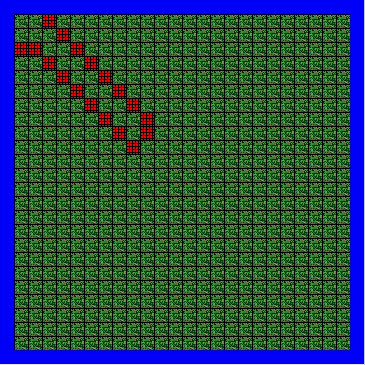
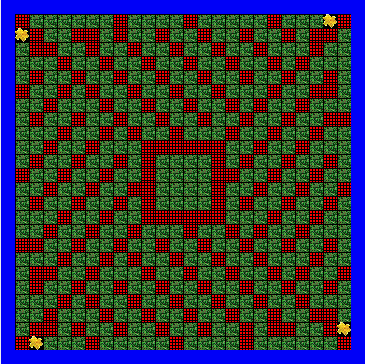
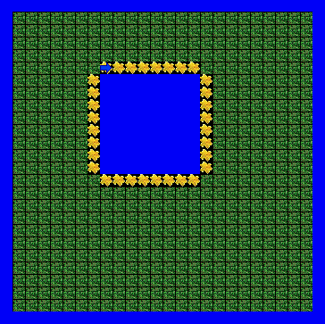
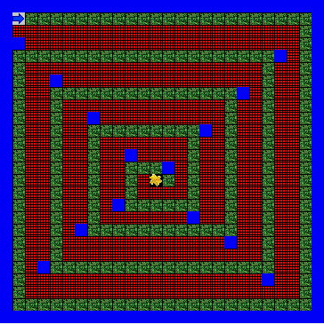
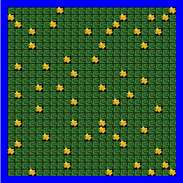
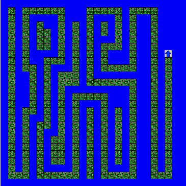
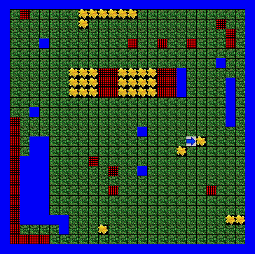

Jeroo
Unit 1
 
Description
Unit 1 was meant to be an introduction to Jeroo basics, and the show how object-oriented programming works to later prepare for Java. We learned how to make the Jeroo hop, pick flowers, toss flowers, plant flowers, and what the nets and water do to the Jeroo. To get used to the notation, we programmed some simple movements for the Jeroo to do, such as moving around nets, or tossing flowers into nets, and more.
Concepts Learned
- How to make a Jeroo (Jeroo a = new Jeroo(5,5,EAST,56))
- How the different blocks affect the Jeroo (water, net, flower)
- How to make the Jeroo do things (hop, pick, plant, toss)
Unit 2
 
Description
In Unit 2, we started doing method calls, creating Jeroo methods that were repeated in the main method for the Jeroos, instead of repeating a sequence of commands over and over. We learned to stop and check the methods while making them, to make that they all worked correctly. We also solved more complex problems and practiced how to program the Jeroo so that it moved in the intended direction.
Concepts Learned
- How to make Jeroo methods
- How to use Jeroo methods in the main method
- Not much else that's new, honestly
Unit 3
 
Description
In Unit 3, we started "while" loops to also avoid excessive lines in the program. It allowed for repeating a certain action, say, a Jeroo method, over and over until something else happened. It also allowed us to detect water, flowers, nets, etc., and take different action when it did.
Concepts Learned
- How to make while loops
- How to make conditions of execution for those loops (when to loop)
- What methods to put in the loops to make the Jeroo do what I want
Unit 4
 
Description
In Unit 4, we learned how to use if/else statements with while statements. It allowed for better detection of things, and better control of when to stop moving (by not creating a loops for the conditions present when it stops). There were multiple conditions to satisfy in these problems, such as different methods for when a flower is to the left, to the right, or both, or when water is in any place next to it.
Concepts Learned
- How to use if/else loops with while loops
- Solving more complex problems
- What methods to put in the loops to make the Jeroo do what I want